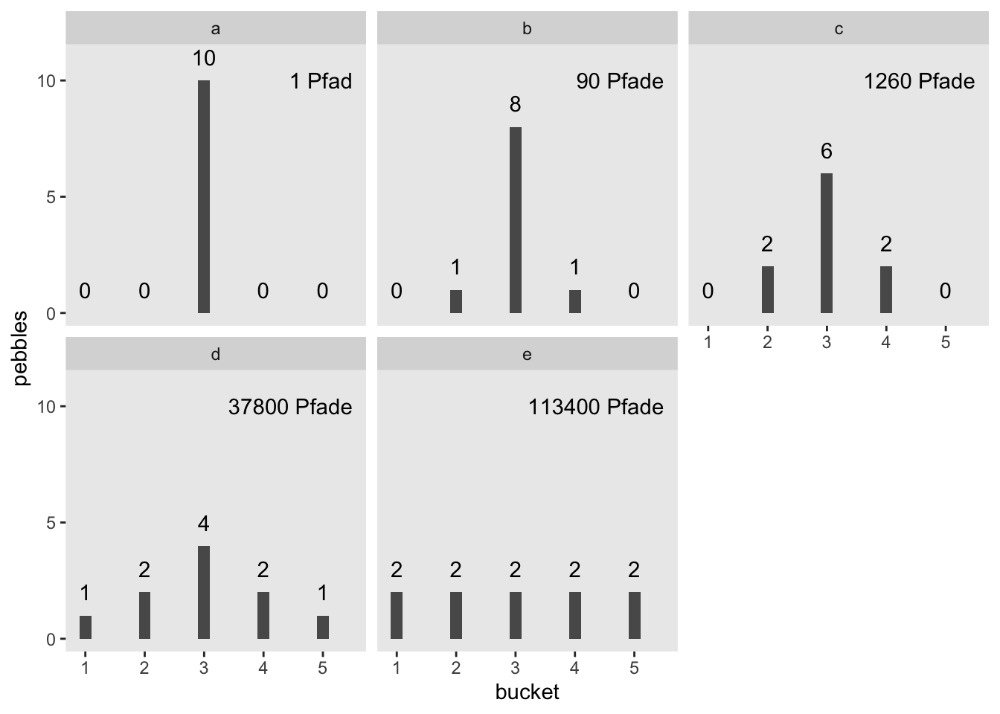

6 Informationstheorie
6.1 Lernsteuerung
6.1.1 Lernziele
- Die grundlegenden Konzepte der Informationstheorie erklären können
6.1.2 Vorbereitung
- Lesen Sie diesen Text als Vorbereitung.
6.1.3 Benötigte R-Pakete
6.2 Grundlagen
Die Informationstheorie ist eine der Sternstunden der Wissenschaft. Manche sagen dass Claude Shannon, der Autor der Theorie, auf einer Stufe mit Darwin und Einstein stehen sollte:
In this single paper, Shannon introduced this new fundamental theory. He raised the right questions, which no one else even thought of asking. This would have been enough to make this contribution earthshaking. But amazingly enough, Shannon also provided most of the right answers with class and elegance. In comparison, it took decades for a dozen of top physicists to define the basics of quantum theory. Meanwhile, Shannon constructed something equivalent, all by himself, in a single paper. Shannon’s theory has since transformed the world like no other ever had, from information technologies to telecommunications, from theoretical physics to economical globalization, from everyday life to philosophy. (…) I don’t think Shannon has had the credits he deserves. He should be right up there, near Darwin and Einstein, among the few greatest scientists mankind has ever had the chance to have.
Für die Statistik ist die Informationstheorie von hoher Bedeutung. Im Folgenden schauen wir uns einige Grundlagen an.
6.2.1 Shannon-Information
Mit der Shannon-Information (Information, Selbstinformation) quantifizieren wir, wie viel “Überraschung” sich in einem Ereignis verbirgt (Shannon 1948).
Ein Ereignis mit …
- geringer Wahrscheinlichkeit: Viel Überraschung (Information)
- hoher Wahrscheinlichkeit: Wenig Überraschung (Information)
Wenn wir also erfahren, dass ein unwahrscheinliches Ereignis eingetreten ist (Schnee im Sommer), sind wir überraschter als wenn wir hören, dass ein wahrscheinliches Ereignis eingetreten ist (Schnee im Winter).
Die Information eines Ereignis ist also eng verbunden mit seiner Wahrscheinlichkeit oder auch mit den Odds eines Ereignisses.
Die Shannon-Information ist die einzige Größe, die einige wünschenswerte Anforderungen1 erfüllt:
- Stetig
- Je mehr Ereignisse in einem Zufallsexperiment möglich sind, desto höher die Information, wenn ein bestimmtes Ereignis eintritt
- Additiv: Die Summe der Information zweier Teilereignisse ist gleich der Information des Gesamtereignis
Definition 6.1 (Shannon-Information) Die Information, \(I\), ist so definiert:
\[I(x) = log_2 \left( \frac{1}{Pr(x)} \right) = log_2(1) - log_2(Pr(x)) = - \log_2 \left( Pr(x) \right)\qquad \square\]
Andere Logarithmusbasen (als 2) sind möglich. Bei einem binären Logarithmus (Basis 2, logarithmus dualis) nennt man die Einheit Bit2.
Ein Münwzurf3 hat 1 Bit Information:
-log(1/2, base = 2)
## [1] 1Definition 6.2 (Bit) Von 1 Bit Information spricht man, wenn ein Zufallsvorgang zwei Ausgänge hat und wir indifferent gegenüber den Ausgängen sind (also beide Ausgänge für gleich wahrscheinlich halten).Bits sind nicht-negative reelle Zahlen. \(\square\)
Damit gilt: \(I = \log_2\left( \frac{1}{Pr(x)} \right)\)
Die Information ist eng verwandt mit den Odds bzw. Log-Odds (Logits):
\(\text{log-odds}(x)=\log \left({\frac {p(x)}{p(\lnot x)}}\right)\)
Logits können als Differenz zweier Shannon-Infos ausgedrückt werden:
\(\text{log-odds}(x)=I(\lnot x)-I(x)\)
Die Information zweier unabhängiger Ereignisse ist additiv.
Die gemeinsame Wahrscheinlichkeit zweier unabhängiger Ereignisse ist das Produkt der einzelnen Wahrscheinlichkeiten:
\(Pr(x,y) = Pr(x) \cdot Pr(y)\)
Die gemeinsame Information ist dann
\[ {\displaystyle {\begin{aligned}\operatorname {I}(x,y)&=-\log _{2}\left[p(x,y)\right]=-\log _{2}\left[p(x)p(y)\right]\\[5pt]&=-\log _{2}\left[p{(x)}\right]-\log _{2}\left[p{(y)}\right]\\[5pt]&=\operatorname {I} (x)+\operatorname {I} (y)\end{aligned}}} \]
Beispiel 6.1 (Information eines wahrscheinlichen Ereignisses)
-log(99/100, base = 2)
## [1] 0.01449957Die Information eines fast sicheren Ereignisses ist gering. \(\square\)
Beispiel 6.2 (Information eines unwahrscheinlichen Ereignisses)
-log(01/100, base = 2)
## [1] 6.643856Die Information eines unwahrscheinlichen Ereignisses ist hoch. \(\square\)
Beispiel 6.3 (Information eines Würfelwurfs) Die Wahrscheinlichkeitsfunktion eines Würfel ist
\({\displaystyle Pr(k)={\begin{cases}{\frac {1}{6}},&k\in \{1,2,3,4,5,6\}\\0,&{\text{ansonsten}}\end{cases}}}\)
Die Wahrscheinlichkeit, eine 6 zu würfeln, ist \(Pr(X=6) = \frac{1}{6}\).
Die Information von \(X=6\) beträgt also
\(I(X=6) = -\log_2 \left( Pr(X=6) \right) = -\log_2(1/6) \approx 2.585 \, \text{bits}\).
-log(1/6, base = 2)
## [1] 2.584963Beispiel 6.4 (Information zweier Würfelwurfe) Die Wahrscheinlichkeit, mit zwei Würfeln, \(X\) und \(Y\), jeweils 6 zu würfeln, beträgt \(Pr(X=6, Y=6) = \frac{1}{36}\)
Die Information beträgt also
\(I(X=6, Y=6) = -\log_2 \left( Pr(6,6) \right)\)
-log(1/36, base = 2)
## [1] 5.169925Aufgrund der Additivität der Information gilt
\(I(6,6) = I(6) + I(6)\).
6.2.2 Entropie
(Informations)entropie ist die Summe der Informationen der Ereignisse einer Zufallsvariablen, \(X\).
Definition 6.3 (Informationsentropie) Informationsentropie ist so definiert:
\[H(p) = - \text{E log} (p_i) = - \sum_{i = 1}^n p_i \text{log} (p_i) = E\left[I(X) \right]\]
Die Informationsentropie ist also die “mittlere” oder “erwartete Information einer Zufallsvariablen.
Die Entropie eines Münzwurf-Versuchs (Bernoulli-Experiment) ist dann maximal (1 bit), wenn die Trefferwahrscheinlichkeit 50% beträgt: \(Pr(X=x) = 1/2\), s. Abb. Abbildung 6.1.
6.2.3 Gemeinsame Information (Mutual Information)
Die gemeinsame Information (mutual information, MI) zweier Zufallsvariablen \(X\) und \(Y\), \(I(X,Y)\), quantifiziert die Informationsmenge, die man über \(Y\) erhält, wenn man \(X\) beobachtet. Mit anderen Worten: Die MI ist ein Maß des Zusammenhangs zweier (nominaler) Variablen. Im Gegensatz zur Korrelation ist die MI nicht auf lineare Abhängigkeiten beschränkt.
Die MI quantifiziert den Unterschied zwischen der gemeinsamen Verteilung \(Pr(X,Y)\) und dem Produkt einer einzelnen4 Wahrscheinlichkeitsverteilungen, d.h. \(Pr(X)\) und \(Pr(Y)\).
Wenn die beiden Variablen (stochastisch) unabhängig5 sind, ist ihre gemeinsame Information Null:
\(I(X,Y) = 0 \quad \text{gdw} \quad \bot(X,Y)\).
Dann gilt nämlich:
\(\log \left( \frac{Pr(X,Y)} {Pr(X) \cdot Pr(Y)} \right) =\log(1) = 0\).
Das macht intuitiv Sinn: Sind zwei Variablen unabhängig, so erfährt man nichts über die zweite, wenn man die erste kennt. So ist Kenntnis der Sternzeichens einer Person und ihrer Körpergröße unabhängig.
Das Gegenteil ist auch wahr: Sind zwei Variablen voneinander komplett abhängig, so weiß man alles über die zweite, wenn man die erste kennt.
Die gemeinsame Information kann man sich als Summe der einzelnen gemeinsamen Informationen von \(XY\) sehen (s. Tabelle 6.1):
Summe der punktweisen gemeinsamen Informationen
Die MI ist also additiv:
\(I(X,Y) = \Sigma_Y \Sigma_y Pr(x,y) \underbrace{\log \left( \frac{Pr(X,Y)}{Pr(X) Pr(Y)} \right)}_\text{punktweise MI}\)
Die Summanden der gemeinsamen Information bezeichnet man auch als punktweise gemeinsame Information (pointwise mutual information, PMI), entsprechend, s. Gleichung 6.1. MI ist also der Erwartungswert der PMI.
\[{\displaystyle \operatorname {PMI} (x,y)\equiv \log_{2}{\frac {p(x,y)}{p(x)p(y)}}=\log _{2}{\frac {p(x|y)}{p(x)}}=\log _{2}{\frac {p(y|x)}{p(y)}}} \tag{6.1}\]
Andere Basen als log2 sind gebräuchlich, vor allem der natürliche Logarithmus.
Anmerkung. Die zwei rechten Umformungen in Gleichung 6.1 basieren auf der Umformung der gemeinsamen Wahrscheinlichkeit.
Zur Erinnerung: \(p(x,y) = p(y)p(x|y) = p(x)p(y|x)\)
Beispiel 6.5 (Interpretation der PMI) Sei \(p(x) = p(y) = 1/10\) und \(p(x,y) = 1/10\). Wären \(x\) und \(y\) unabhängig, dann wäre \(p^{\prime}(x,y) = p(x)p(y) = 1/100\). Das Verhältnis der Produkte der einzelnen Wahrscheinlichkeit zur gemeinsamen Wahrscheinlichkeit wäre dann 1 und der Logarithmus von 1 ist 0. Das Verhältnis von 1 entspricht also der Unabhängigkeit. Ist das Verhältnis z.B. 5, so zeigt das eine gewisse Abhängigkeit an. Im obigen Beispiel gilt: \(\frac{1/20}{1/100}=5\).
Die MI wird auch über die sog. Kullback-Leibler-Divergenz definiert, die die Differenz zwischen gemeinsamer Wahrscheinlichkeitsfunktion bzw. -dichte und dem Produkt der jeweiligen Randwahrscheinlichkeiten bzw. -dichte angibt.
6.2.4 Maximumentropie
Definition 6.4 (Maximumentropie) Die Verteilungsform, für die es die meisten Möglichkeiten (Pfade im Baumdiagramm) gibt, hat die höchste Informationsentropie.
Abbildung 6.2 zeigt ein Baumdiagramm für einen 3-fachen Münzwurf. In den “Blättern” (Endknoten) sind die Ergebnisse des Experiments dargestellt sowie die Zufallsvariable \(X\), die die Anzahl der “Treffer” (Kopf) fasst. Wie man sieht, vereinen einige Werte der Zufallsvariable mehr Pfade auf sich als andere: Der Wert \(X=1\) vereinigt 3 Pfade (von 8) auf sich; der Wert \(X=3\) nur 1 Pfad.

6.2.4.1 Ilustration
Sagen wir, Sie stehen vor 5 Eimern und haben 10 Kieselsteine bei sich, die mit den Nummern 1 bis 10 beschriftet sind (McElreath 2020). Weil Sie nichts besseres zu tun haben, werfen Sie die Kiesel in die Eimer und zwar so, dass die Wahrscheinlichkeit für einen Kiesel in einen bestimmten Eimer zu landen für alle Eimer gleich ist. Sie werfen also Ihre 10 Kiesel und betrachten das Ergebnis; die Kiesel sind jetzt in einem bestimmten (zufälligen) Arrangement auf die Eimer verteilt. Jede Aufteilung (der 10 Kiesel in den 5 Eimern) ist gleich wahrscheinlich6 – die Wahrscheinlichkeit, dass alle 10 Kiesel in Eimer 1 landen ist also gleich hoch wie die Wahrscheinlichkeit, dass jeder Eimer einen Kiesel abkriegt. Jetzt kommt’s: Manche Arrangements können auf mehrere Arten erzielt werden als andere. So gibt es nur eine Aufteilung für alle 10 Kiesel in einem Eimer (Teildiagramm a, in Abbildung 6.3). Aber es gibt 90 Möglichkeiten, die Kiesel so aufzuteilen, dass 2 in Eimer 2 landen, 8 in Eimer 4 und 2 in Eimer 4, s. Teildiagramm b in Abbildung 6.3. Teildiagramme c bis e zeigen, dass die Anzahl der Aufteilungen schnell astronomisch hoch wird, wenn sich die Kiesel “gleichmäßiger” auf die Eimer verteilen. Die gleichmäßigste Aufteilung (Diagramm e) hat die größte Zahl an möglichen Anordnungen. Eine Aufteilung der Kiesel auch als Pfad durch ein Baumdiagramm beschrieben werden.
Hier sind ein paar verschiedene Arrangements, deren Anzahl von Aufteilungen wir hier anschauen:
d <-
tibble(a = c(0, 0, 10, 0, 0),
b = c(0, 1, 8, 1, 0),
c = c(0, 2, 6, 2, 0),
d = c(1, 2, 4, 2, 1),
e = 2)
d
Hier sind die Wahrscheinlichkeitsverteilungen der 5 Arrangements7:
d %>%
mutate_all(~. / sum(.))Dann kann man die Wahrscheinlichkeit einfach in Entropie umrechnen8:
d %>%
mutate_all(~ . / sum(.)) %>%
gather() %>%
group_by(key) %>%
summarise(h = -sum(ifelse(value == 0, 0, value * log(value))))Das ifelse dient nur dazu, eine Wahrscheinlichkeit von 0 eine Entropie von 0 zu verpassen9, denn sonst würden wir ein Problem rennen, wenn wir \(log(0)\) ausrechnen.
log(0)
## [1] -Inf6.2.5 Kreuzentropie
Definition 6.5 Die Kreuzentropie (cross entropy) ist die Anzahl der benötigten Bits, um ein ein Ereignis aus der Verteilung \(X\) mit einer anderen Verteilung \(Y\) darzustellen, s. ?eq-cr. \(\square\)
\[H(X,Y) = - \sum_x X(x) \cdot log(Y(x)) \tag{6.2}\]
Anschaulich gesprochen gibt die Kreuzentropie die Differenz zwischen zwei Verteilugen an.
6.2.6 Kullback-Leibler-Divergenz
Die Kullback-Leibler-Divergenz, \(D_{KL} (X\, || \, Y)\), ist verwandt mit der Kreuzentropie, da
\[H(X,Y) = H(X) + D_{KL} (X\, || \, Y)\]
6.3 Zufallstext erkennen
6.3.1 Entropie von Zufallstext
Kann man wohl Zufallstext maschinell erkennen? Sicher gibt es viele Ansätze, um das Problem anzugehen. Lassen Sie uns einen Ansatz erforschen. Erforschen heißt, wir erforschen für uns, es handelt sich um eine didaktische Übung, das Ziel ist nicht, Neuland für die Menschheit zu betreten.
Aber zuerst müssen wir überlegen, was “Zufallstext” bedeuten soll.
Nehmen wir uns dazu zuerst einen richtigen Text, ein Märchen von H.C. Andersen zum Beispiel. Nehmen wir das Erste aus der Liste in dem Tibble hcandersen_de, “das Feuerzeug”.
Das Märchen ist 2688 Wörter lang.
Jetzt ziehen wir Stichproben (mit Zurücklegen) aus dieser Liste und erstellen damit eine Art Zufallstext.
Zählen wir, wie häufig jedes Wort vorkommt:
zufallstext_count <-
tibble(zufallstext = zufallstext) %>%
count(zufallstext)
head(zufallstext_count)Der Häufigkeitsvektor von wortliste besteht nur aus Einsen, so haben wir ja gerade die Wortliste definiert:
Daher ist ihre Informationsentropy maximal.
entropy(wortliste_count$n, unit = "log2")
## [1] 9.47978Die Häufigkeiten der Wörter in zufallstext hat eine hohe Entropie.
entropy(zufallstext_count$n, unit = "log2")
## [1] 9.477878Zählen wir die Häufigkeiten in der Geschichte “Das Feuerzeug”.
Und berechnen dann die Entropie:
entropy(das_feuerzeug_count$n, unit = "log2")
## [1] 8.075194Der Zufallstext hat also eine höhere Entropie als der echte Märchentext. Der Zufallstext ist also gleichverteilter in den Worthäufigkeiten.
Pro Bit weniger Entropie halbiert sich die Anzahl der Möglichkeiten einer Häufigkeitsverteilung.
6.3.2 MI von Zufallstext
Left as an exercises for the reader10 ü•≥.
6.4 Literatur
Stone (2019) bietet einen nützlichen Einstieg in das Thema der Informationsentropie. Shannons (1948) berühmter Artikel setzt höhere Ansprüche.
Es gibt eine Reihe nützlicher (und teilweise recht informationsdichter) Wikipedia-Einträge zum Thema Informationstheorie.
Desiderata, sagt man↩︎
oder shannon↩︎
wie immer, als fair angenommen, wenn sonst nichts anderes angegeben ist↩︎
auch als marginalen Wahrscheinlichkeiten oder Randwahrscheinlichkeiten bezeichnet↩︎
Für stochastische Unabhängigkeit kann das Zeichen \(\bot\) verwendet werden↩︎
so ähnlich wie mit den Lottozahlen↩︎
Ist das nicht eine elegante Syntax?! Solomon Kurz, der Autor der Syntax, hielt sich nicht an die aktuelle Version von
dplyr;mutate_allist eigentlich überholt zugunsten vonmutatemitacross, aber die Prägnanz der Syntax hier ist schon beeindruckend, wie ich finde.↩︎Regel von L’Hopital↩︎